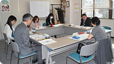

- 【日 時】
- 3月8日（木）10：00分～11：10
- 【会 場】
- 埼玉県生協連 会議室
- 【出 席】
- 6人（生協ネットワーク協議会、さいたま市消団連、埼玉消団連、事務局）
【議 題】
※「食の安全オンブズ会議要綱」の目的やメンバー構成について確認し、会議を進めました。
1．2012年度活動のまとめ（案）について
- 「2012年度の情勢」については、この冬大流行したノロウイルスについて、埼玉県内農畜産物の放射能汚染の状況など加筆します。
2．2013年度活動方針（案）について
- 「埼玉県食の安全・安心の確保に関する基本方針」について、全員で確認できるような学習を一度設けることにしました。
- TPPの学習会について、積極的に行います。
3．2013年度年間日程（案）について
【報告事項】

- 埼玉県食品安全局との懇談会（2/4）
- 第5回食の安全オンブズ会議（2/4）
- 農林水産省関東農政局と消費者団体との意見交換会（2/26）
- 平成25年度食品衛生監視指導計画（案）に対しての要望書
（埼玉県、さいたま市、川越市）
|